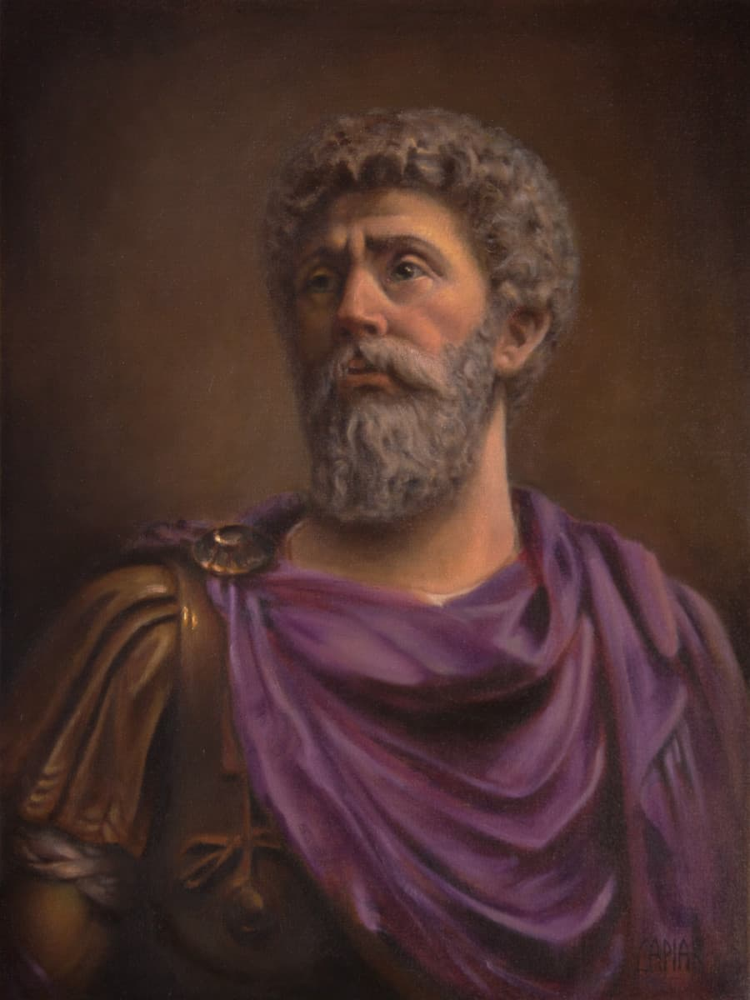

Stoicism
Stoicism is an ancient Greek philosophy that teaches the development of self-control and fortitude as a means of overcoming destructive emotions.
It is a philosophy of personal ethics informed by a system of logic and views on the natural world.

Stoic Philosophers
"The happiness of your life depends upon the quality of your thoughts."
Join the Stoic Community
Engage with like-minded individuals, share insights, and deepen your understanding of Stoicism.